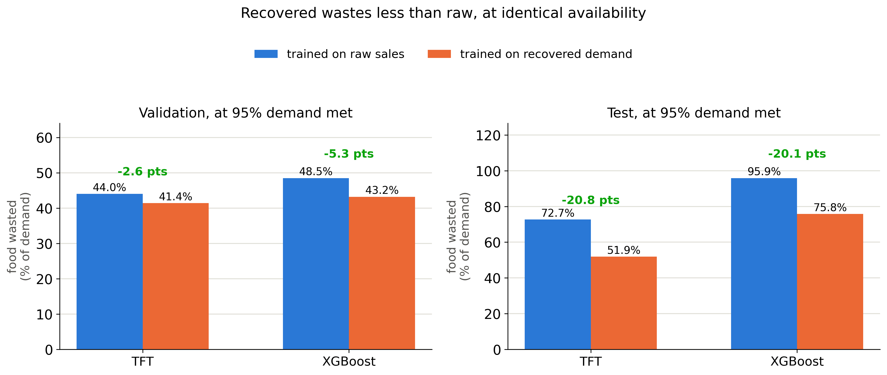
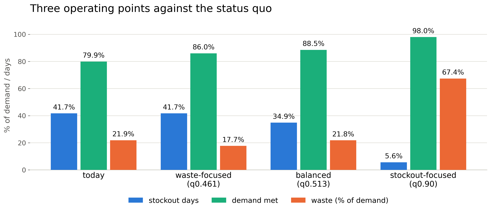

Code & full report
Code & full report
1. Objective
Recover the demand that stockouts hide, and turn it into a better order
— not just a better forecast.
- A stockout records zero sales, not zero demand — so a forecast trained on raw sales keeps under-ordering exactly the products that sell out.
- Recover the hidden demand → forecast it as a range → convert the range into an order.
2. Data
Subset of FreshRetailNet-50K — 100 stores,
5,601 series, 43.8% of product-days partially stocked out.
 Once out, it stays out: 87.4% never restock
before closing (13.4% already empty at opening) — why
Stage 2 just carries the predicted rate forward, rather than
modelling a same-day return.
Once out, it stays out: 87.4% never restock
before closing (13.4% already empty at opening) — why
Stage 2 just carries the predicted rate forward, rather than
modelling a same-day return.
- Dingdong Inc., via Hugging Face — 100 of 898 stores, a seeded whole-store draw with no volume bias, 11.2% of the corpus.
- Frozen calendar: train (62d) → validate (14d) → calibrate (14d) → sealed test (opened once).
- What makes this solvable: hour-level stockout flags, so a censored zero is distinguishable from a genuine no-sale.
Once out, it stays out: 87.4% never restock
before closing (13.4% already empty at opening) — why
Stage 2 just carries the predicted rate forward, rather than
modelling a same-day return.
3. Approach & Workflow
From raw sales to a stocking decision — one pipeline,
start to finish.
1
Ingest & Subset seeded draw
100 seeded stores, 5,601 series, frozen calendar.
↪
Baselines — naive · SARIMA ·
XGB-quantile, on raw sales: the bar every arm has to clear.
↓
2
Recover · Stage 1 LightGBM, Tweedie
Predicts hourly in-stock demand rate, non-stockout hours only.
↓
3
Recover · Stage 2 fill + correct
Fills stocked-out hours only, floored at observed, corrected ×0.900.
↓
4
Forecast TFT + XGBoost, 6 quantiles
Raw & recovered demand — 4 arms, each grid-tuned.
↓
5
Calibrate split-CQR
Widens bands to ~80% coverage — checked via day-block bootstrap CI.
↓
6
Order newsvendor
Reads q*=cu/(cu+co) off the forecast; compared raw vs. recovered, 4 arms.
↓
7
Evaluate cost sweep
9 cost ratios vs. naive, on the sealed test week.
Implementation: six quantiles fit jointly regularize
rather than dilute — q0.8 pinball 0.1334→0.1327
vs. a 2-quantile fit.
4. Stage-wise Results
- Recovery works: WAPE 0.2966 vs. 0.3684 for a naive baseline — 19.5% lower error, measured on held-out full-shelf (clean) days — the only days true demand is actually known.
- Fixes the forecast where censoring bites: on chronic-stockout products (n=1,375), WAPE improves ~23%; bias corrected from −20% to near zero.
- The bands are honest: 80% band coverage lands at 79–83%, in validation and on the sealed test week alike.

Both model families, validation and the sealed test week.- Why waste actually drops: raw must be pushed to a high percentile (~79th–95th) to offset its own downward bias; recovered needs only ~68th–92nd. Less padding, less waste.
5. Final Ordering Decision
Order the q*-th percentile of the calibrated,
recovered forecast.
 Validation window, recovered TFT arm. The sealed test week is
scored only at the single headline point above.
Validation window, recovered TFT arm. The sealed test week is
scored only at the single headline point above.
- Rule: order = F−1(q*), q* = cu cu+co .
- What this chart shows: nine guesses for how much worse an empty shelf is than a wasted item, from “barely matters” (0.25×) to “very costly” (19×). At every guess the model beats naive — least (~20%) when the two are assumed equal, most (70%+) at the extremes, since the model adjusts and naive never does.
Validation window, recovered TFT arm. The sealed test week is
scored only at the single headline point above.
6. Choosing an Operating Point
Three quantiles, three priorities — pick based on what the
business is optimizing for.

- Stockout-focused (q0.90): 5.6% stockout days, 98.0% demand met — a real waste cost, not a free win.
- Balanced (q0.513): no more waste than today, 7 fewer stockout days, +8.6 points demand met. No cost assumption needed.
- Waste-focused (q0.461): matches today’s stockout rate at 19% less waste.
- Checked against the test week (same fixed quantiles, not re-picked): naive scores 42.8% stockout days there. Waste-focused and balanced both flip worse, in both model families (54–61%); only stockout-focused still beats naive (14–16%).
7. Why TFT and Recovered Data
The data layer did the work; the model architecture was a
confirmation, not the finding.
- Recovered over raw: raw sales are truncated by stockouts, teaching the model that an empty shelf meant low demand. Recovery removes that bias where it occurs.
- The payoff, quantified: on full-shelf (clean) days — the regime built to penalise recovery — it recovers far more lost sales than the waste it adds. Pays off once a stockout costs more than ~0.5× a binned item on chronic-stockout products (0.87× even on the least favourable ones) — and for fresh food, a stockout is always worse than a bin.
- TFT over XGBoost, only barely: pinball 0.1074 vs. 0.1116, scored on full-shelf (clean) rows — a real but modest ~3.9% edge. Run both to prove the recovery result isn’t a one-architecture artefact.
8. Limitations & Future Work
A proof of concept on a dataset that records sales, not stock.
- No ground truth for stockout-day demand — it’s fundamentally unobservable, so every result here is scored on “clean” (full-shelf) days, the only days recorded sales equal true demand. Closing this gap needs real stock-on-hand data, not a better test.
- The chronic-stockout result rests on just 1,375 rows from one seeded subset draw.
- The cost ratio is an assumption, swept rather than known.
- Every number here is a ratio or a percentage — the sales figure is normalised by an undisclosed coefficient, so no absolute unit count is ever asserted.
- Everything degrades with distance from calibration — test-week figures are the honest ones.
- Future work: stock-on-hand/delivery data would turn recovery’s central assumption into a direct measurement; recorded spoilage would make waste an observed outcome, not an arithmetic one.
9. References
- Dingdong Inc. (2024). FreshRetailNet-50K dataset (Hugging Face).
- Lim et al. (2021). Temporal Fusion Transformers.
- Romano, Patterson & Candès (2019). Conformalized Quantile Regression.
- Vovk, Gammerman & Shafer (2005). Algorithmic Learning in a Random World.
- Arrow, Harris & Marschak (1951). Optimal inventory policy (newsvendor).